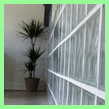
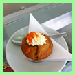
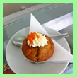
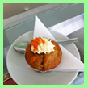

Eisbar Düsseldorf
Es erwarten Sie kreativ-klassische Eis- und Dessertkreationen professionell mit frischen und hochwertigen Zutaten zubereitet, abgerundet durch Espresso und Kaffee in bester Bioqualität aus einer Würzburger Privatrösterei.
Modern interpretiert, hervorragend kombiniert und köstlich zubereitet! Genießen Sie all das in unserem stilsicher eingerichteten Ambiente aus Eis und Licht auch unter freiem Himmel.
Alle Produkte können natürlich auch an jedem erdenklichen von Ihnen preferierten Ort verköstigt werden.
Mnne & Aichael
Wann hat die EisBar geöffnet?
| Montag - Freitag | 09:00 Uhr - 20:00 Uhr |
| Samstag & Sonntag | 10:00 Uhr - 20:00 Uhr |
Mit der EisBar in Kontakt treten:
0211/112200
mail@eisbar-düsseldorf.de
 Gefällt uns ausgesprochen gut!
Gefällt uns ausgesprochen gut!
Wo ist die EisBar?
Moltkestraße 97
40479 Düsseldorf



 

